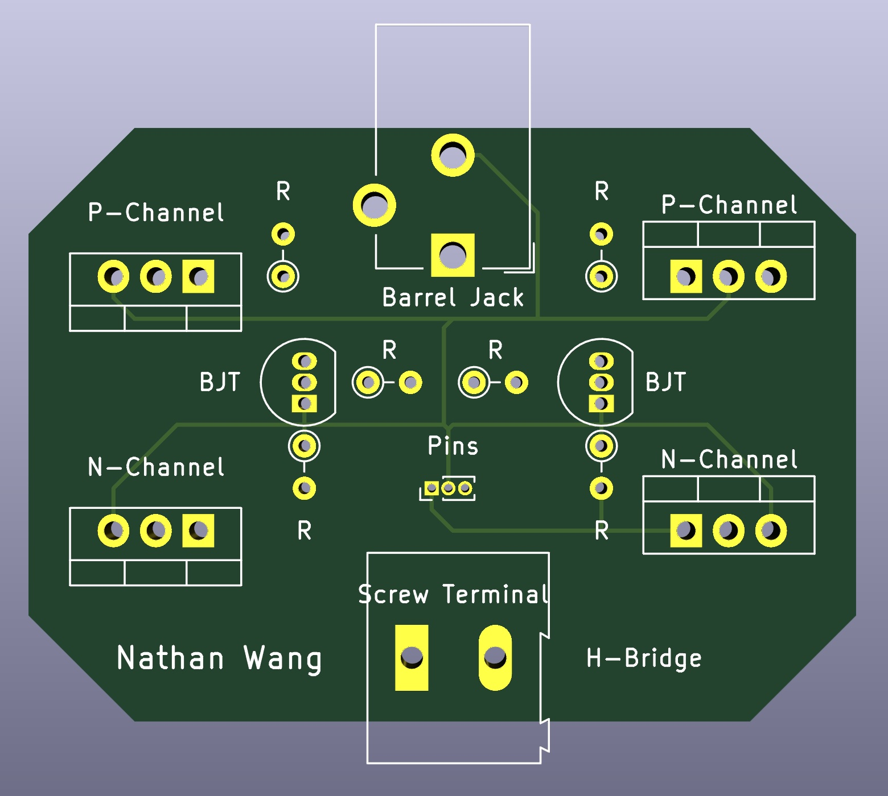
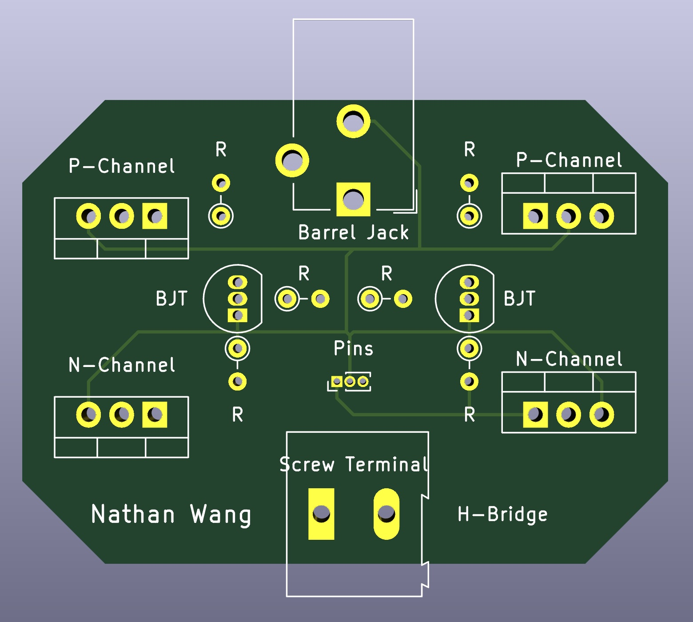
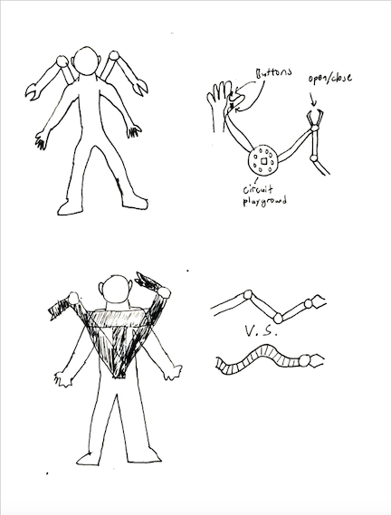
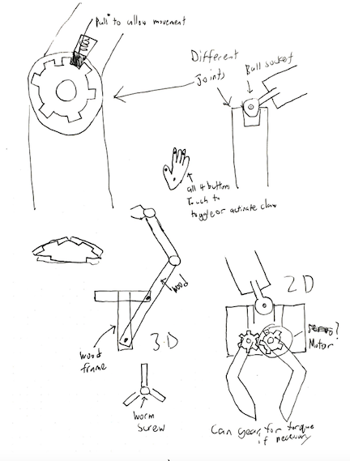

Mechanical and Human Factors Engineering
My primary major is Mechanical Engineering. I have a particular interest in robotics, and am currently taking courses and building projects in this field. My second major is Human Factors Engineering, where I learn to apply user and product based research to increase the usability of a product.
Senior Design Project: Medication Adherence Device - Fall 2022
For my senior design project, I worked with two teammates to develop a prototype for EleMed, a small Tufts-based medical research group.
In the US, around 75% of the 50+ population take prescription medication. However, around half of these consumers experience difficulty adhering to their daily medication.
This may be due to various reasons, such as bad memory, medical illiteracy, or a lack of a consistent schedule.
To combat this issue, EleMed is looking to develop a routine-based alert system that triggers when consumers go through a certain part of their daily routine,
such as brewing coffee or brushing teeth. This system is meant to be flexible enough to suit various routines for different consumers.
Our final prototype consisted of a two-part system: the first part was a sensor that would detect a user performing a part of their daily routine, such as brushing their teeth or brewing coffee.
This sensor module would then send a signal through a web server.
The second part of the system, a pill case dock, would then sound an alert that would only turn off once the user has removed the pill case from the dock and takes their pills.
The video below provides a 2-minute overview of the project, and presentation slides can be found here.
Force Transferrence Robot - Fall 2022
The final project for Robotics was to create a pair of robotic arms that would allow for users to transmit force from one to the other. Moving one arm would move the other, but if one arm encountered resistance (such as an object being placed in its path), the user holding the other arm would feel the resistance.
This was done using integral controls to determine the force necessary to rebound to the position determined by the encoders. The further the arm was from where it was supposed to be (determined by the position of the other arm), the more force the motor would exert to correct it.
Counterweighted 3 DOF Robot - Fall 2022
The second project for Robotics was to create a counterweighted robot with 3 degrees of freedom. The project was broken into 3 parts, each to be made by a member of the 3-person team. I was tasked with fabricating the dual motor mount. This motor mount was meant to manipulate the control arms of a 4-bar linkage around one axle, while providing a 5:1 mechanical advantage without any deadzones or cogging caused by gears. This was done using a belt-pulley system using high-tension elastic bands, as well as a screw-based tensioning system to tension the band.
The project was ultimately abandoned due to time constraints, but I managed to get my 4-bar linkage working with 8mm drone motors and an Arduino MKR motor shield. Below are some images of my motor mount (green and white parts) mounted on a rotating base plate made by a teammate (gray).
Self-Balancing Robot - Fall 2022
The first large project for a Robotics class was to create a self-balancing robot. The hardware was done using CAD and a MarkForged 3D printer and mounted onto a carbon fiber tube. The flywheel was cut out of half-inch aluminum using a water jet. Using a gyroscopic sensor, the mounted Arduino was able to control the flywheel and generate torque to correct orientation.

Wooden Shelf - Fall 2022
The first assignment of the Tufts ME Senior Design course was to create a wooden shelf. This was a way for us to learn to use the powertools available in the NOLOP and Bray Labs. My shelf is designed to be mounted on a wall, and has walls to prevent any items from falling off. I sketched up my dimensions and cut the 6.5"x48" board accordingly. The L-brackets were all using the miter saw and attached using countersunked wood screws. The large wall (part 3) was the hardest cut to make, as I had to cut down the length of 3 feet of wood at 45 degrees using a handheld Japanese saw. However, after sanding down the cut, it was able to fit into the rest of the shelf without any issues.

Drawing Arm - Spring 2022
One major product for my robotics controls class was to fabricate and program a double-jointed arm with the ability to draw using a sharpie. This robot was able to write letters with the sharpie (albeit slowly), and was made using CAD-modelled 3D-printed parts, and programmed using Arduino and C++.
Spider-bot - Fall 2021
For the final project of my Electromechanical Systems & Robotics, groups were tasked with creating a robot that would reach the second floor of the Tufts Science and Engineering Center and high-five a professor. My group designed and fabricated a robot that would theoretically use drone motors to press itself against a wall and climb vertically (like a spider). While we could not get it to work within the time assigned, it was an interesting concept to test. We affectionately called our robot the Spider-bot, and added some thematic flair, like the spiderweb-shaped propellor covers.

Rolling Tool-Box - Fall 2021
I designed the Rolling Stool-box as a final design project for my Methods for Human Factors Engineering class. We were tasked with designing a product that could improve everyday life, and I decided to address young children roaming about their homes. The process included surveying, creating personas, analyzing work flow, anthropometrics, and CAD modeling. The final product is a stepped stool with wheels (that lock under weight, like a library stool) that children can drag around the house. The write-up also details a companion app that includes features such as "listening mode" and "lock mode", which allow parents to monitor their children remotely.

A PDF of the final project report can be downloaded here.
Beam Deflection and Design - Fall 2021
The goal of this project was to design a C-bar that deflected exactly half an inch under a 200 lb force applied. The designing was done on SolidWorks, and it was checked mathematically using Castigliano's Theorem for analysis. The final product was fabricated and tested using an Instron testing machine in Bray Labs at Tufts University.

Circuit Board Design - Fall 2021
My first project for my ME30: Electromechanical Systems and Robotics class was to design a power supply circuit board to convert 12V to 3.3V and 5V. This project was done with KiCAD, and I sent my design to be fabricated at OSH Park.


The second project was to design an H-bridge able to turn a DC motor in both directions in KiCAD.
 

Internet of Things - Summer 2020
My first course after transferring to Tufts was "Engineering Sciences 93: Internet of Things". This course was taught remotely (due to the pandemic) during the summer of 2020, and each student worked with Arduinos to integrate hardware, online databases, and even augmented reality (using Vuforia).
My final project involved using the materials I had in home to recreate a miniaturized version of the classic basketball arcade game with a live digital leaderboard.
I documented all of my work for that class in a Google Site linked below.
The video documenting the final project is shown below
Battleship - Spring 2020
I worked with two classmates to create Battleship in Python as our final project for our intro CS class. The player places their own ships on the board, before playing against a computer algorithm that shoots "intelligently". This algorithm shoots at random until a ship is hit. Then, it shoots in the adjacent cells until it hits the same ship, then continues to shoot in that direction. If the ship isn't sunk, the algorithm switches to the opposite directions to finish it off. This project was made in PyCharm CE, and can be downloaded from GitHub here.
A video playthrough is shown below.
AdaArm - Fall 2019
AdaArm was my final project for a Visual Studies class at Haverford College. We were meant to provide some social commentary with our projects, so I chose to create a robotic wooden arm as a first step towards normalizing "non-proper (two legs and two arms)" bodies. The professor posted my on her Instagram to advertise the class exhibition.


High School Robotics
Aerodynamics
I made a series of videos documenting an aerodynamics project I did during senior year of high school. In short, I worked with a partner to build and fly planes to test out the aerodynamic effects of different wing shapes. The videos are also available here.
Battery Box
I used the laser cutter in my high school's Makerspace to make a battery box for the VEX Robotics club.
VEX Robotics
Competition footage from high school.
I held the positions of head mechanic and team driver every year.
Sophomore Year - VEX Starstruck - New England Regional Championship
Junior Year - VEX In The Zone - North Andover Tournament
Graphic Design
Freelance Work
SeeChange (a rising social media influencer) hired me to design and produce icons and a banner for them. There is a deliberate Instagram aesthetic.


The Bi-College Newspaper tasked me with creating an updated header for their website. They are a student-run newspaper between Haverford College and Bryn Mawr College.

Posters
I presented my independent project in aerodynamics with the poster I designed below. I created it using Google Slides.

Dorm Apparel
As one of the proctors in my dorm in high school, I took it upon myself to submit a few designs for the annual dorm apparel. Below are my three designs.


The design above won the dorm vote.
Class Apparel
I spent a year in Phillips Academy taking Astronomy Research. I designed class apparel, and the teacher was kind enough to subsidize it for the entire class.

GitHub
Check out my coding projects, personal and academic.
Movies
I took a number of video classes at Andover.
All editing, including all other videos on this website, was done on my laptop using Davinci Resolve.
Class Final: Dead Roads
I worked with a partner to produce a short thriller as a final project to our senior video class.
Class Final: Verdict
I worked with a partner to produce a medium-length court drama as a final project to our junior video class.
Music
I enjoy making electronic music in my spare time. Find me on SoundCloud as natewang36.
Presentations
I enjoy creating PowerPoints that feature frequent movement and pleasing graphics to help bring life and versatility to a presentation.
Science Symposium
Phillips Academy hosts an annual science symposium in the spring, where students present various projects that they have undertaken throughout the year. I presented a project I did with a partner regarding Aerodynamics that took place in the fall. You can find videos documenting this project in the "Videos Produced" tab. Sample images are below.